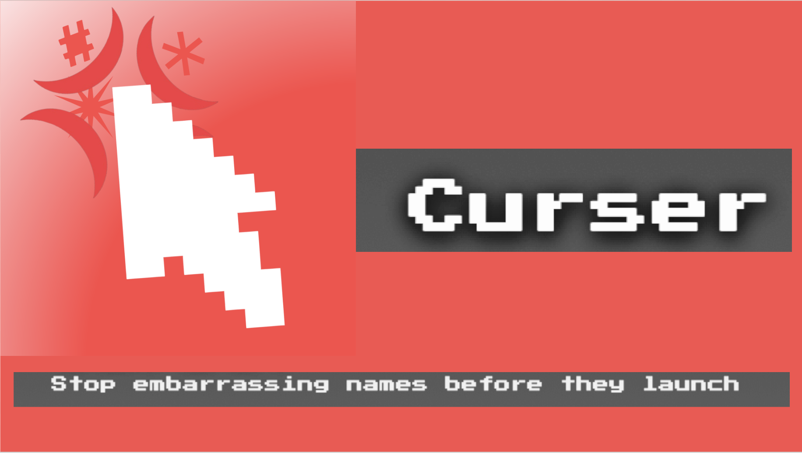

Curser: Stop Embarrassing Names Before They Launch
Curser is an interactive application that takes in spoken or typed inputs and finds the closest unsavory word in multiple languages to the input."
More details
Problem
It turns out that coming up with names is hard, especially when you want them to be unique, abstract, and not accidentally offensive in some other language. A bad name tell s potential customers and investors that you don't care, and quietly puts you at a disadvantage before anyone even looks at what you built. Pharmaceutical companies deal with this exact problem constantly. When creating brand names for drugs, they are required to use names that are clearly distinct from existing medications and are not allowed to imply efficacy, mechanism, or outcomes. You can't call a drug something that sounds like it cures cancer, even if you really wish it did. This pushes companies toward strange, abstract, made up names that are legally safe, but often linguistically fragile once the drug is sold overseas. A name that passed every legal review can still fall apart the moment it hits another language or culture. The same problem shows up in tech, just with fewer lawyers involved and more optimism. If you are at a hackathon, YC, or convincing yourself that your next LLM wrapper is definitely the next big thing, you probably want a name that sounds catchy and distinctive. Names like Hulu, Zillow, Spotify, Stripe, or Airbnb work because they are abstract enough to stand out. That abstraction is also a risk, because you are always one unlucky phonetic collision away from naming your product something unintentionally cursed somewhere else. At that point, it does not matter how good the idea is, the damage is already done. Curser sits right in that uncomfortable gap. It is a tool for answering the question, “Does this innocent sounding word get me in trouble somewhere else?”, before you commit to it as a nickname, product name, brand, or inside joke. In other words, this is a nickname QA tool that doubles as a way to avoid very preventable naming regret.
Approach
At a high level, the app records or accepts audio, transcribes speech locally using Whisper, converts candidate text spans into IPA phonemes, and compares them against a curated multilingual database of words. PanPhon is used to compute phonetic distances between the input and database entries, allowing results to be ranked by similarity and surfaced through an interactive interface with explanations, sortable tables, and session-level history tracking. In addition to analysis, Curser supports optional text-to-speech playback of matched words. By default, pronunciation is handled locally using eSpeak, but the app can also integrate ElevenLabs for higher-quality, neural voice synthesis when enabled. This makes it possible to hear how flagged words actually sound across different languages and voices, which is often critical when evaluating phonetic ambiguity in spoken contexts. The entire pipeline runs locally by default and supports live microphone input, one-shot recording, and audio uploads, complete with real-time level metering. The interface is built entirely with Streamlit, while speech recognition is powered by Whisper. Together, these components make Curser a practical tool for detecting accidental phonetic collisions across languages, especially when evaluating names, brands, or terminology that must avoid unintended or offensive interpretations.
Results & Impact
This project was a much bigger learning experience than I initially expected. I learned a lot about language and phonetics. I have been interested in linguistics since taking an anthropology class in high school, but I had no formal training going into this. Working with IPA, grapheme-to-phoneme systems, and cross-language comparisons forced me to think more precisely about how spoken language is represented and where different tools succeed or fail. This was also my first time deploying a web application, and my first project where the explicit goal was to make the code safe and reproducible so that other people could run it locally (learned about virtual environments 2 weeks ago in one of my data science classes). Managing virtual environments, dependencies, and setup instructions showed me how easily projects can break without careful environment control, and why reproducibility is a core part of real software development. I also learned a lot about working with third-party APIs through integrating ElevenLabs for text-to-speech. This was my first time using an API that required authentication via a private token, and it forced me to think more carefully about security and configuration. I learned how to manage API keys without hard-coding them into the repository, including using Streamlit’s secrets.toml system and environment-specific configuration. More generally, working with the ElevenLabs API helped me understand how external services expose functionality, how client libraries can return streamed or chunked data instead of simple values, and how small interface assumptions can break an application if they are not handled carefully. I also learned how to independently manage and iterate on a large project. Working alone, I had to define a minimal viable product, get a full pipeline working, then incrementally add new technologies and features while breaking and fixing things along the way. This process taught me how to scope work realistically, debug systematically, and prioritize stability and clarity over adding features too quickly.